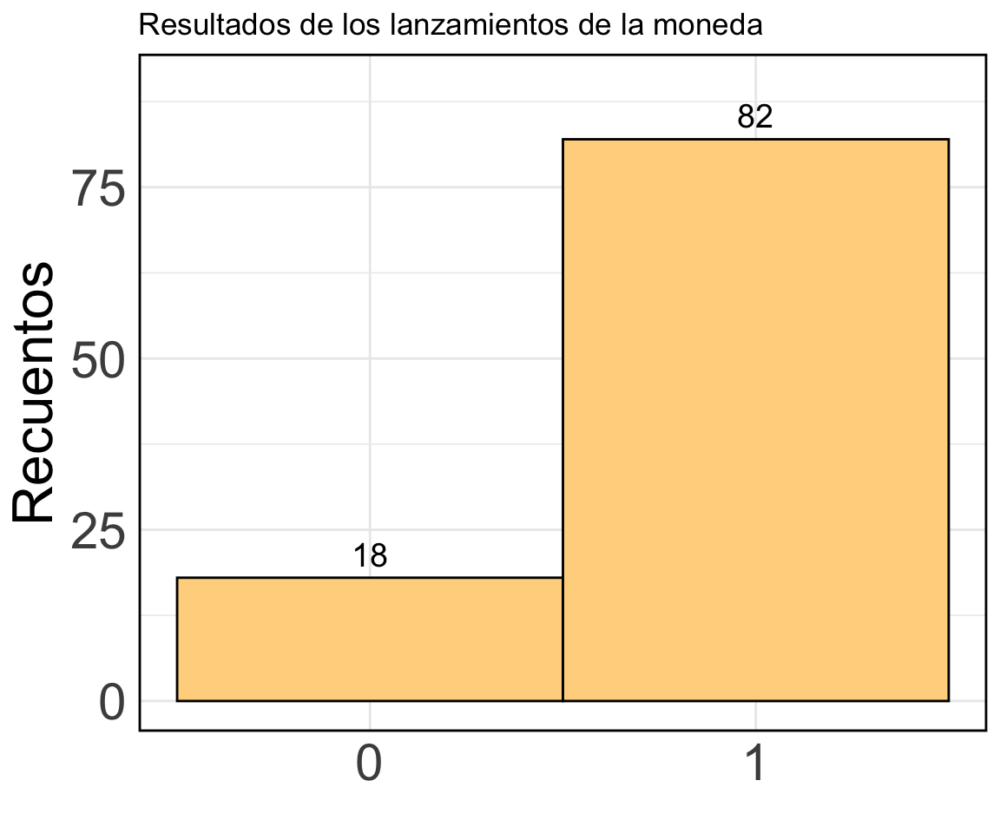
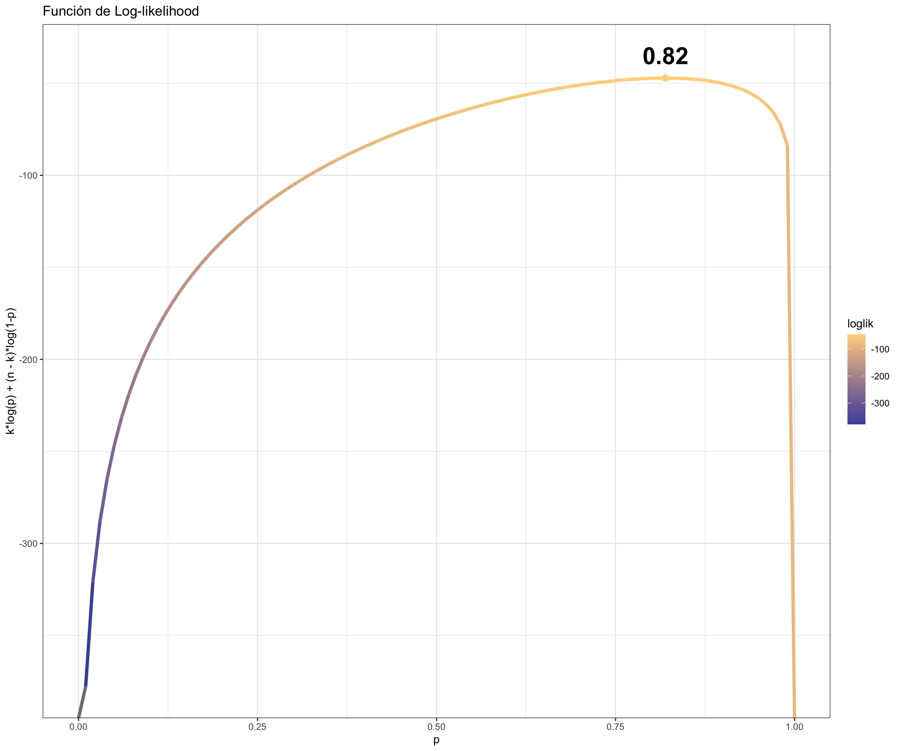

Notebook: Estimación por Máxima likelihood (MLE)
Estimación
Modelos Estadísticos: ¿Cuáles son los valores más plausibles1 de los parámetros dados los datos que observamos?
Por ejemplo, supongamos que alguien lanza la misma moneda 100 veces y registra los resultados en una base de datos. Los datos se ven así:
Explicación:
Aquí se muestra un ejemplo donde se lanza una moneda 100 veces y se registran los resultados. En este caso, hemos simulado los datos asumiendo una probabilidad de 0.8 de obtener “Cara” en cada lanzamiento. Los resultados se visualizan en un gráfico de barras que muestra la cantidad de veces que se obtuvo “Cara” y “Cruz”.
Estimación mediante Máxima likelihood (MLE)
Anteriormente, lanzamos la misma moneda 100 veces y obtuvimos “Cara” (1) 82 veces.
Pregunta: ¿Qué valor de \(p\) es más plausible (“likely”) para haber generado estos datos?
Función de likelihood
Para responder a esta pregunta, debemos definir una función de likelihood, que mide cuán plausible es un valor particular de \(p\) dado los datos observados. La likelihood se define como:
\[\textit{L}(p \mid \text{Datos}) = p^{k}(1-p)^{n-k}\]
Donde: - \(k\) es el número de éxitos (caras) observados. - \(n\) es el número total de lanzamientos.
Función de Log-likelihood
La función de log-likelihood es simplemente el logaritmo natural de la función de likelihood:
\[ \ell(p \mid \text{Datos}) = \textit{L}og \textit{L}(p \mid \text{Datos}) = k \textit{L}og(p) + (n - k) \textit{L}og(1-p) \]
El uso de la log-likelihood es común porque facilita la derivación y optimización, dado que el logaritmo convierte productos en sumas, simplificando el cálculo.
Solución Numérica
Calcularemos la likelihood y la log-likelihood para algunos valores arbitrarios de \(p\) y luego encontraremos el valor de \(p\) que maximiza la log-likelihood.
# Función de likelihood
likelihood <- function(p, n, k) {
L = p^k * (1-p)^(n-k)
return(L)
}
# Función de log-likelihood
ll <- function(p, n, k) {
ell = k * log(p) + (n - k) * log(1-p)
return(ell)
}
# Evaluar las funciones de likelihood y log-likelihood para algunos valores arbitrarios
likelihood(p=0.1, n=100, k=82)[1] 0.00000000000000000000000000000000000000000000000000000000000000000000000000000000001501ll(p=0.1, n=100, k=82)[1] -190.7likelihood(p=0.7, n=100, k=82)[1] 0.00000000000000000000007695ll(p=0.7, n=100, k=82)[1] -50.92En este paso definimos las funciones de likelihood y log-likelihoo. La likelihood nos da una medida directa de la plausibilidad de \(p\), mientras que la log-likelihood nos da una versión transformada de esta medida que es más fácil de trabajar matemáticamente.
Evaluación de la Log-likelihood en un Rango de Valores de \(p\)
Ahora evaluaremos la función de log-likelihood en un rango de valores de \(p\) para encontrar el valor de \(p\) que maximiza la log-likelihood. Este valor es nuestro estimador de máxima likelihood (MLE) para \(p\).
# Evaluar la función de log-likelihood para un rango de valores de p
espacio_parametros <- tibble(p=seq(0,1,by=0.01)) %>%
mutate(loglik = ll(p, n=100, k=82))
espacio_parametros# A tibble: 101 × 2
p loglik
<dbl> <dbl>
1 0 -Inf
2 0.01 -378.
3 0.02 -321.
4 0.03 -288.
5 0.04 -265.
6 0.05 -247.
7 0.06 -232.
8 0.07 -219.
9 0.08 -209.
10 0.09 -199.
# ℹ 91 more rows# Encontrar el valor de p que maximiza la función de log-likelihood
p_optimo <- espacio_parametros[which.max(espacio_parametros$loglik),]
p_optimo# A tibble: 1 × 2
p loglik
<dbl> <dbl>
1 0.82 -47.1Aquí calculamos la log-likelihood para una serie de valores posibles de \(p\) (desde 0 hasta 1) e identificamos el valor de \(p\) que maximiza la log-likelihood. Este valor es el que mejor explica los datos observados bajo el modelo de Bernoulli que hemos supuesto.
Visualización de la Optimización Numérica
Finalmente, visualizamos la función de log-likelihood junto con el valor de \(p\) que maximiza esta función.

El gráfico muestra la función de log-likelihood para diferentes valores de \(p\). El punto destacado en el gráfico corresponde al valor de \(p\) que maximiza la log-likelihood, es decir, el MLE. Este es el valor que consideramos como la mejor estimación de \(p\) dada la evidencia de los datos.
Footnotes
¡Notar que dice “más plausibles”, no “más probables”!↩︎